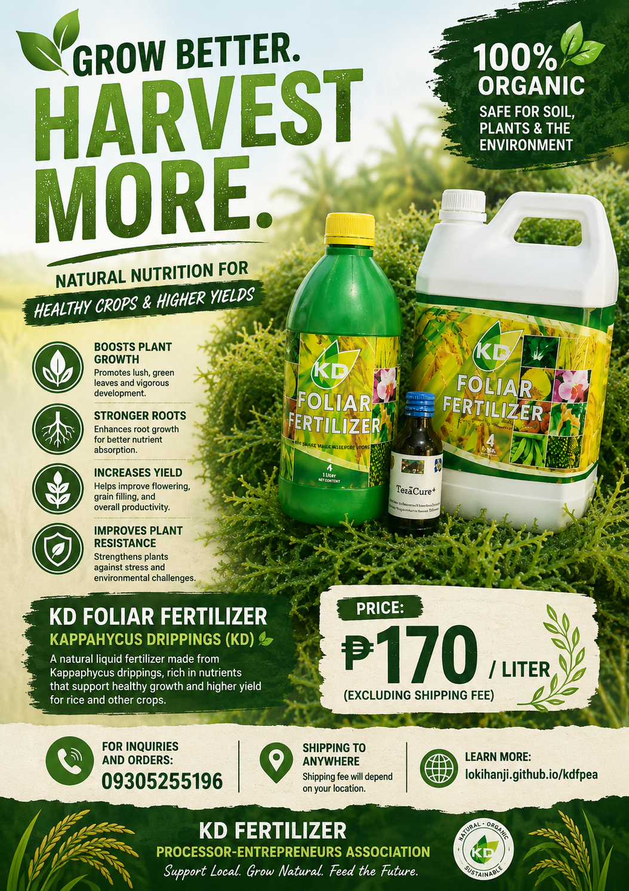

Accelerate crop growth with Kappaphycus Drippings (KD).
KD Fertilizer Processor-Entrepreneurs Association produces premium organic liquid foliar fertilizer extracted from freshly harvested Kappaphycus alvarezii red seaweed. Boost soil vitality, enhance crop resistance, and multiply your yields naturally.
Pioneering the extraction of Kappaphycus alvarezii sap.
KD Fertilizer Processor-Entrepreneurs Association is a community-driven initiative in the Philippines. Supported by the research of SPAMAST and funding from DOST-PCAARRD, we produce Kappaphycus Drippings (KD) — a high-potency organic foliar fertilizer.
By establishing coastal production hubs, we provide sustainable livelihood opportunities to local seaweed farmers while equipping inland growers with high-grade, cost-effective bio-stimulants for organic cultivation.
Why farmers choose KD Seaweed Sap
KD is a liquid biostimulant that goes beyond standard fertilizers, triggering robust biochemical responses in crops.
Growth Biostimulation
Abundant natural phytohormones (auxins, cytokinins, and gibberellins) promote rapid cell division, root elongation, and seed germination.
Stress Resilience
Enhances crop tolerance against environmental stressors such as drought, high heat, soil salinity, and common plant diseases.
Foliar Spray Efficiency
Applied at a dilution of 20ml per liter of water. Direct leaf spraying allows rapid absorption through the stomata for quick nutrient uptake.
Collaborating for Sustainable Agriculture
We work with esteemed institutions and organizations to advance organic farming practices.
Davao del Sur State College (DSSC)
Our research partner providing scientific expertise on seaweed extraction and agricultural applications.
Department of Science and Technology - Philippine Council for Agriculture, Aquatic and Natural Resources Research and Development (DOST-PCAARRD)
Supporting our initiative with funding and technical assistance for sustainable agriculture.
Local Farmer Associations
Partnering with farming communities to distribute and demonstrate the benefits of Kappaphycus Drippings.
Coastal Seaweed Farmers
Collaborating directly with the source to ensure fair trade and sustainable seaweed harvesting practices.

Boost your crops naturally with our KD Foliar Fertilizer!
Made to support healthier plant growth, stronger roots, and better yields for your farm. 🌾
For inquiries and orders: 09305255196
Transforming coastal resources into agricultural prosperity.
Kappaphycus Dripping technology bridges marine agriculture with inland crop farming, promoting a zero-waste circular economy and strengthening rural community livelihoods.
Meet our officers and active members
The KD Fertilizer Processor-Entrepreneurs Association is powered by dedicated community leaders, seaweed processors, and agricultural extension pioneers.
Edilberto L. Tabac
Leads KDFPEA coordination, training workshops, and DOST-PCAARRD partner relations.
Napisa P. Tabac
Oversees seaweed collection sites and quality control of the KD extraction process.
Emie Rose P. Tabac
Manages member documentation, training records, and cooperative communications.
Romelita N. Jan
Controls financial operations, equipment procurement, and transparent budget auditing.
Edizon P. Tabac
Ensures operational compliance and procedural audits for quality standard preservation.
Daniel J. Calvo Jr.
Conducts community outreach and shares KD application guidelines with local farmer associations.
Juan B. Jan
Maintains facility safety and logistics organization during harvest collections.
Our production and crop results
Visual highlights of our seaweed collection, dripping extraction process, and organic farming applications.
Get your Kappaphycus Drippings (KD) fertilizer
Interested in purchasing KD foliar fertilizer, partnering for cooperative research, or attending our next training? Send us an inquiry today.
Send Inquiry